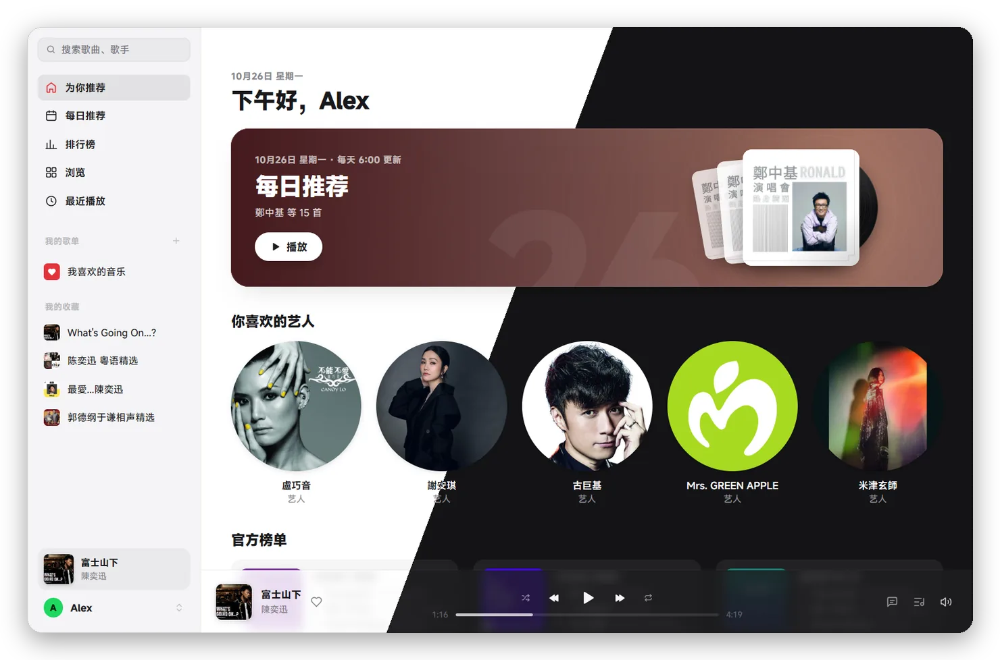
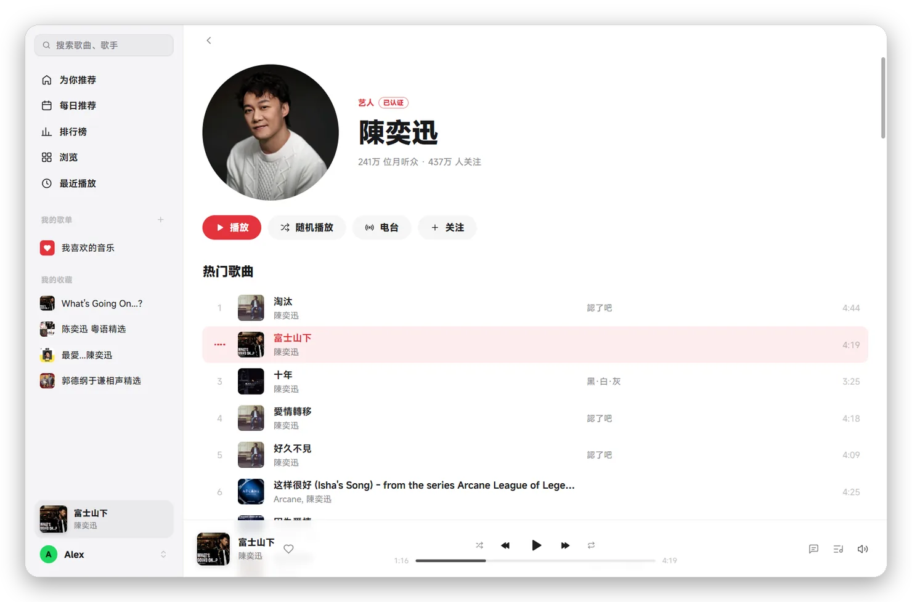
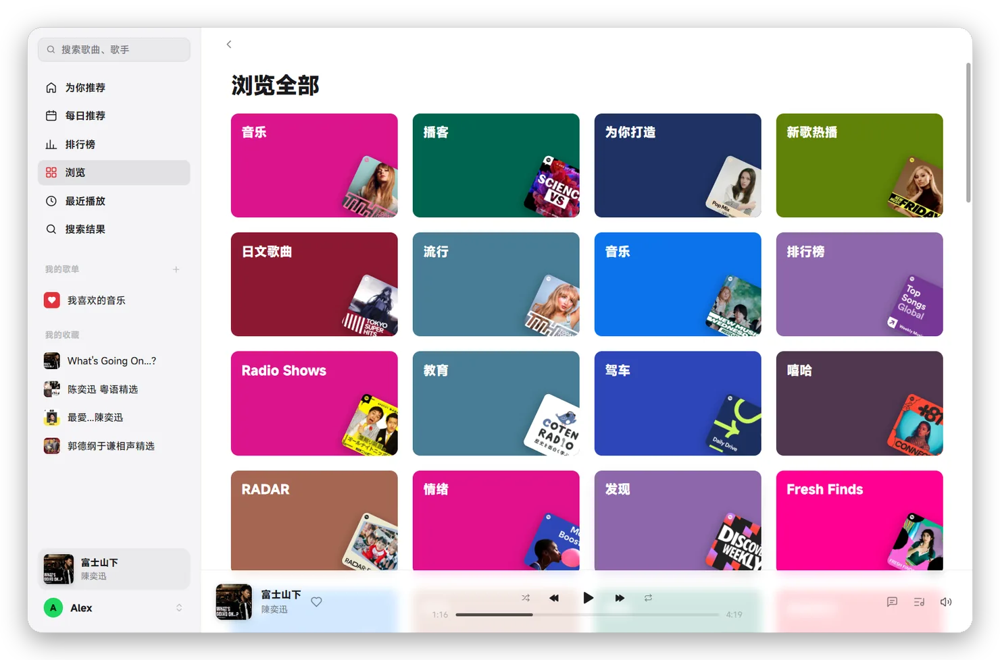
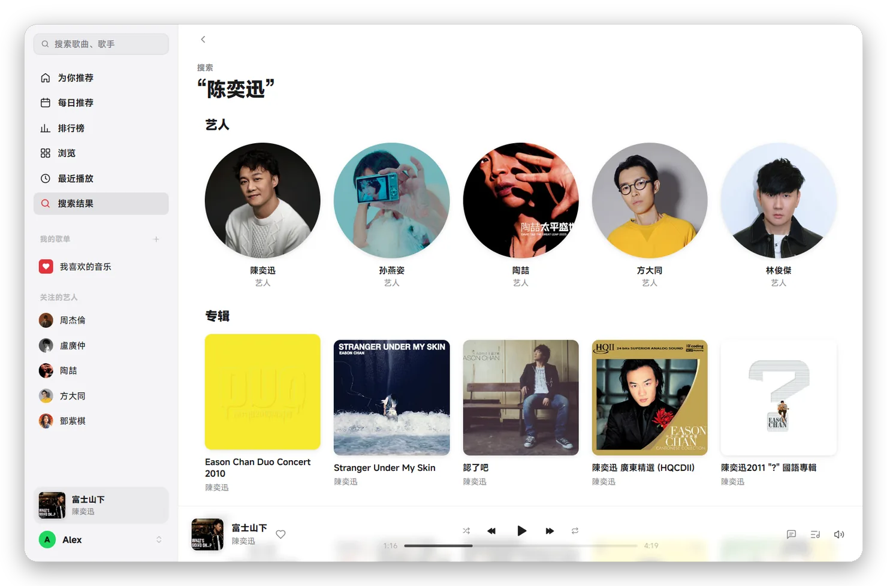
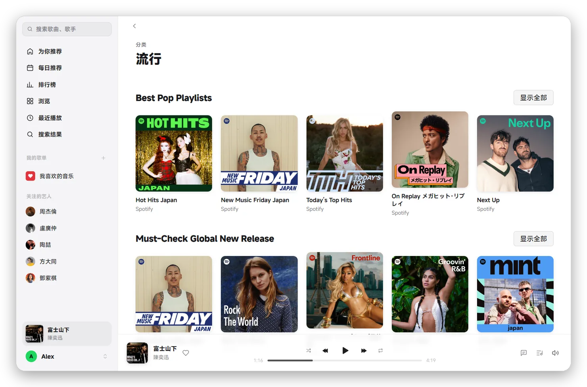

MYSPOTIFY · NON UFFICIALE · OPEN SOURCE · WINDOWS / MACOS
Spotify, in una vera app desktop
Interfaccia nativa, testi che scorrono, video musicali e podcast video. Gli account gratuiti riproducono i brani per intero e puoi dare un'occhiata anche senza accedere.
Un progetto personale, senza legami con Spotify. Usarlo può far limitare il tuo account. Leggi prima i rischi

< 10 MBda scaricare: decomprimi o trascina in Applicazioni e parte
≈ 190 MBin uso mentre navighi, più un processo di decifratura di circa 60 MB durante la riproduzione
1–2 sdall'avvio a freddo ai contenuti, senza accedere prima
0analisi o tracciamenti: impostazioni e cronologia restano sul tuo computer


Sembra un programma desktop.
L'interfaccia è disegnata in modo nativo da MyGo, non è una pagina web in una cornice. Barra laterale, In riproduzione a tutto schermo, una scena a ritmo di musica, tasti multimediali del sistema, scorciatoie globali, temi chiaro e scuro. Chiudendo la finestra la musica continua dalla barra di sistema.
Guarda senza accedere.
Ricerca, home, playlist, album e artisti sono lì appena apri l'app: come il web player, MySpotify si procura un'identità ospite. Accedi quando vuoi ascoltare.
Brani interi con un account gratuito.
Accedi dalla pagina ufficiale di Spotify. L'audio è decifrato dal modulo DRM del componente web del sistema, lo stesso percorso di quando ascolti in un browser, a 128k AAC.
Testi per quasi tutto, e scorrono.
Quello che manca a Spotify arriva da NetEase Cloud Music e LRCLIB. Hanno la precedenza i testi sincronizzati, e titolo e durata devono combaciare, così non finisce mai un'altra versione. Per i brani in lingua straniera c'è la traduzione in cinese, quando esiste.
Anche i video musicali.
I brani con un video hanno una piccola etichetta: clicca per riprodurlo, oppure passa al video in qualsiasi momento dalla barra del player. Lo guardi al posto della copertina, a finestra piena o a schermo intero, con il testo corrente sotto.
Podcast da ascoltare, guardare e leggere.
I podcast video mostrano le immagini con un clic. La trascrizione scorre come un testo, si illumina parola per parola, e un clic su una frase porta lì.
TRACKLIST
Quasi tutto quello che ha Spotify
Si riproduce
1
HomeLe sezioni e i titoli di Spotify, filtrabili per musica o podcast
2
Mix giornalieri e classifiche
3
Sfoglia tutte le categorie
4
Playlist e albumModifichi le tue playlist; quelle create sul web o sul telefono si sincronizzano da sole
5
Pagine di artisti e braniCrediti, riproduzioni, brani simili
6
RicercaBrani, artisti, album, playlist, podcast
7
Mi piace, follow, salvataggi
8
Riproduci come prossimo e coda
9
RadioDa un brano o da un artista
10
Ascoltati di recente e profilo
Non si riproduce
Audio a 256k / losslessLa richiesta di licenza a 256k di un account gratuito viene rifiutata; il lossless c'è solo nelle app ufficiali
Download offlineServono Premium e il client ufficiale
Jam, DJServono Premium o l'app per telefono
Testi parola per parolaSpotify dà al web player solo la sincronizzazione per riga
Alcuni podcast su macOSGli show ospitati da Spotify con audio cifrato solo Widevine
Supporto stabile per Mac Intel / LinuxInstaller sperimentali; per Intel servono ancora prove su hardware reale
Attività degli amici, file locali, BlendNon ancora realizzati
SCHERMATE
Ogni pagina, con dati reali
Queste schermate sono in cinese. Dalla v0.4.17 puoi scegliere inglese, cinese semplificato, italiano (dalla v0.4.23) o Sistema in Impostazioni → Aspetto → Lingua.


DIETRO LE QUINTE
Le parti che non vedrai
Passaggio tra telefono e computer (sperimentale)
Il tuo computer compare nell'elenco dispositivi di Spotify sul telefono: toccalo e la musica passa lì. Mentre il telefono riproduce, il computer lo vede e può controllarlo.
Gli errori non lo bloccano
Una licenza scaduta ottiene una nuova identità e un nuovo tentativo. Con il limite di richieste attende il tempo chiesto da Spotify e riprende da dove era. Se cade la rete, riprende quando torna.
Mai scaricare un brano due volte
I brani già ascoltati restano sul computer nei segmenti cifrati in cui sono arrivati, quindi partono prima e non consumano dati. Il limite si sceglie nelle impostazioni, e si possono cancellare tutti.
I tuoi dati restano sul tuo computer
Impostazioni e cronologia sono locali, e i cookie per rinnovare la sessione sono salvati cifrati. Si connette solo a Spotify, Gravatar, NetEase e LRCLIB per i testi, e GitHub per cercare aggiornamenti.
LEGGI PRIMA
Prima di usarlo
Non è un client ufficiale
Usa le interfacce interne e non documentate del web player. Quando Spotify le cambia, può smettere di funzionare.
Il tuo account è a rischio
I termini di Spotify non permettono a programmi di terzi di accedere al servizio, quindi il tuo account potrebbe essere limitato o bloccato. Usa solo il tuo e nulla di commerciale.
Non riproduce pubblicità
Il piano gratuito del web player ha gli annunci; MySpotify non li riproduce. A Spotify probabilmente non piace. Se ti crea problemi, usa il client ufficiale o abbonati a Premium.
Non aggira il DRM
La decifratura la fa il modulo Widevine o FairPlay del tuo sistema, e il programma non riceve mai le chiavi né il contenuto decifrato. Ogni riproduzione richiede una licenza, quindi non funziona offline.
Apple silicon / Intel (sperimentale, prove su hardware in corso)
Apri il dmg e trascina MySpotify in Applicazioni.
L'app non è notarizzata da Apple, quindi il primo avvio viene bloccato: vai in Impostazioni di Sistema › Privacy e sicurezza e clicca Apri comunque in fondo. Oppure esegui xattr -dr com.apple.quarantine /Applications/MySpotify.app nel Terminale.
Clicca «Accedi a Spotify» e accedi nella pagina ufficiale di Spotify.
Le versioni successive si aggiornano da Impostazioni › Informazioni con un clic. Impostazioni e accesso stanno lontano dai file del programma, quindi non si perde nulla.
Spazio Riproduci / pausa⌘/Ctrl ← → Precedente / successivo⌘/Ctrl D Mi piace⌘/Ctrl L In riproduzione⌘/Ctrl F Cerca
FAQ
Domande
Perché un brano dice che al momento non può essere riprodotto?
Non è disponibile nella tua regione, oppure Spotify ha rifiutato la licenza. Se non lo riproduce nemmeno il web player, è una questione di licenze.
La barra del player dice che Spotify sta limitando le richieste. Cosa faccio?
Niente. MySpotify aspetta il tempo chiesto da Spotify e poi riprende da dove era. Il limite scatta se avvii brani di continuo in poco tempo.
Se i brani sono in cache, perché serve comunque la rete?
La cache contiene audio cifrato, e per decifrarlo serve una licenza che Spotify rilascia al momento. La cache fa risparmiare dati e buffering.
Come imposto un proxy?
Per impostazione predefinita segue il proxy di sistema. Puoi anche inserire 127.0.0.1:7890, http://…, https://… o socks5://… in Impostazioni › Rete › Proxy.
Perché la musica continua dopo aver chiuso la finestra, e come esco?
Chiudere la finestra la manda solo nella barra di sistema. Per uscire, clic destro sull'icona nella barra di sistema e scegli Esci da MySpotify.